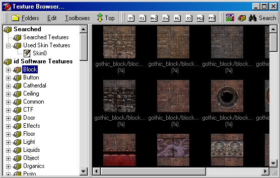

Overview
Updated 02 Mar 2011
- QuArK Information Base
- 1. Introduction to QuArK
- 1.7. Texture-browser in QuArK
|
|
Overview
Updated 02 Mar 2011
|
Upper levels: - QuArK Information Base - 1. Introduction to QuArK - 1.7. Texture-browser in QuArK |
|
1.7.1. Overview |
[ - - ] |
The texture-browser is used for both the
Map Editor and
Model Editor. There are many ways of getting into the texture-browser. The most common way for both editors is by clicking on its main menubar item Toolboxes then click on Texture Browser... For the Map Editor another common way is from the
polyhedron-view or
face-view when you are looking at an object
and want to select a texture for it. |
|
Index |
|
Overview |
Rowdy - 02 Mar 2011 | [ Top ] |
|
Across the top is the menu and toolbar, this is covered in more detail in the 'Menu and tool-icons' section.  Down the left of the form the first item you will see is the Searched Textures folder.This is where any textures will be placed when you use the Search tool, shown at the far right of the toolbar. Next comes the Used Skin Textures folder. These are all the textures that are curently being used in the map or model as the case may be. Below that is a list of texture groups. The ones shown here are from Quake III Arena, yours may differ depending on which game you are editing, and whether you have setup any additional texture groups of your own. Most of the form is taken up with a preview of all the textures in the selected group. |
|
Copyright (c) 2009, GNU General Public License by The QuArK (Quake Army Knife) Community - http://quark.sourceforge.net/ |
[ - Top - ] |